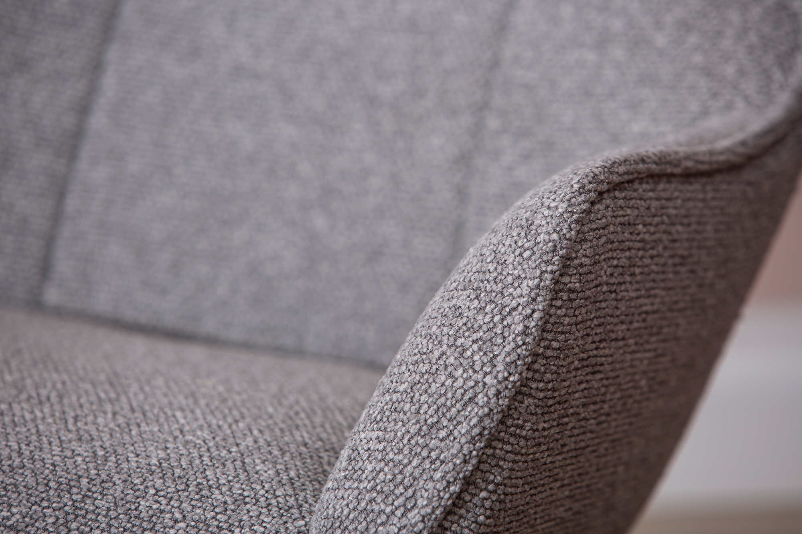
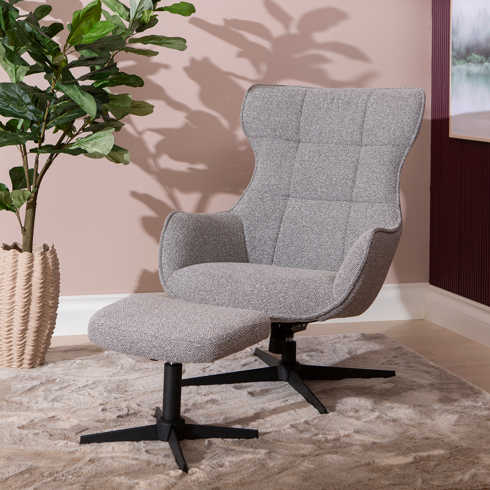
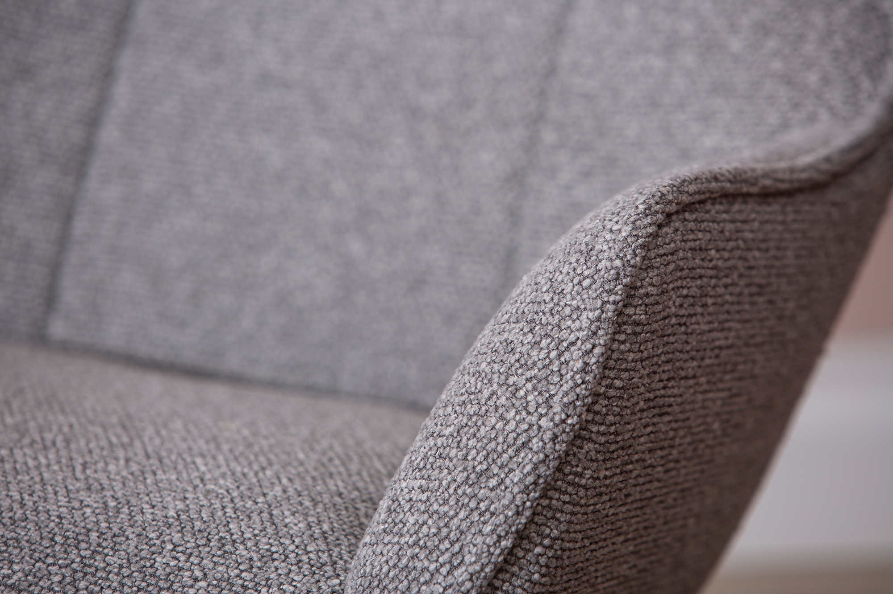
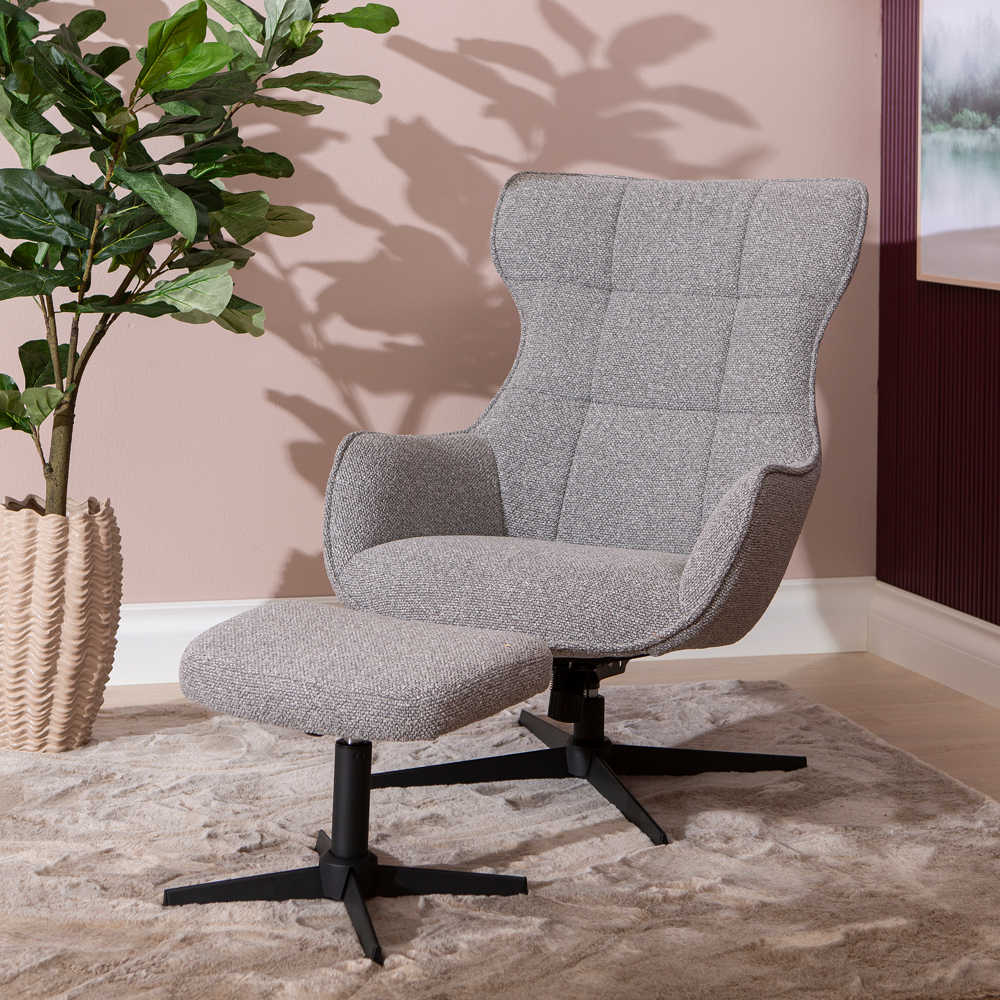

Wind tv-tuoli rahilla, vaalean harmaa kangas / mattamusta jalka
198264


 



Kuvaus
Wind TV-tuoli rahilla on moderni ja tyylikäs lisä olohuoneeseen. Sen vaaleanharmaa kangas yhdistyy mattamustiin jalkoihin, luoden harmonisen ilmeen. Korkea selkänoja ja leveä istuin tarjoavat erinomaisen mukavuuden, kun taas pehmeälinjainen muotoilu ja sirot käsinojat lisäävät viihtyvyyttä. Sopii täydellisesti rentoutumiseen TV:n äärellä tai kodin tilaan, jossa arvostat skandinaavista ja kaunista designia.
Tekniset tiedot
| Sopii täydellisesti rentoutumiseen TV | n äärellä tai kodin tilaan, jossa arvostat skandinaavista ja kaunista designia. |
|---|---|
| Väri | Harmaa |